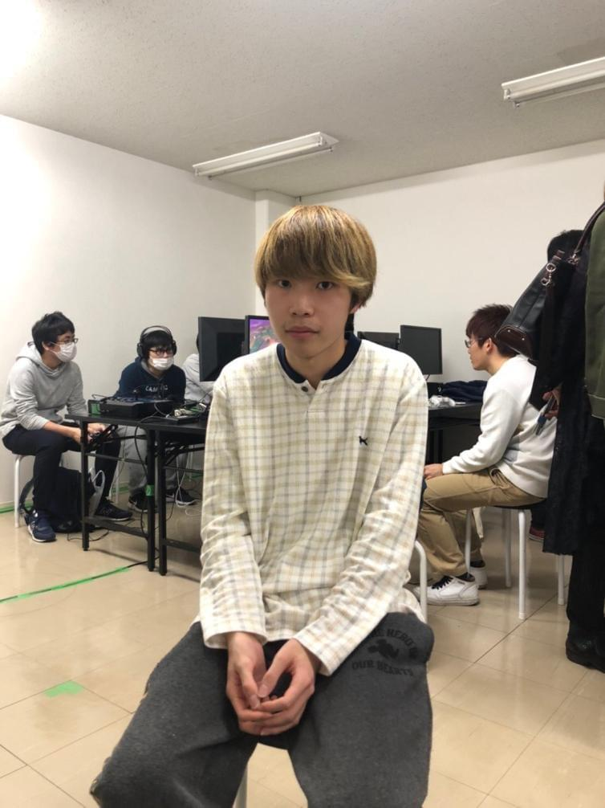
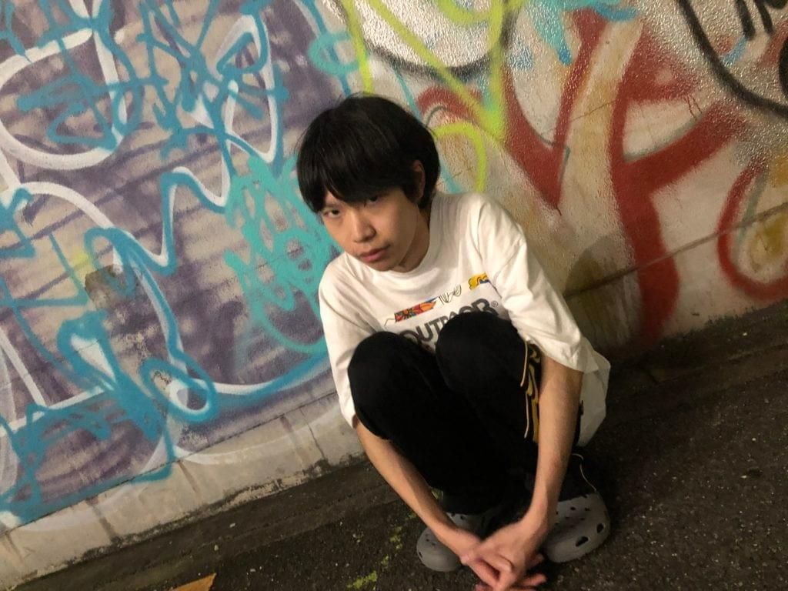

インタビュアー/記事作成者：岡本（PNG運営スタッフ）
アトリエさんのTwitter：https://twitter.com/AtelieRsb_?s=20
今回は、スマブラをやっている人なら誰もが知っている、知るべき存在のAtelier（アトリエ）選手に
インタビューをさせていただきました。
是非是非ごらんになってください!!
記者：黒文字
アトリエさん：黄文字
それではインタビューの方、始めていきます。
アトリエさんのことを書いている記事は他にもあると思うので、
出来るだけそちらとは被らないようにしていきますね。
よろしくお願いします!!
よろしくお願いします。
まず「アトリエ」の名前の由来を聞いてもいいですか？
小さい時に、家の近くに喫茶店があって、そこの名前が「アトリエ」だったんで、それが由来ですね。
そこの店長が、俺のおばあちゃんと仲良くて、毎朝そこに行く度にパンとか貰ってたんですよね。
今はないんですけどね。
今までの競技人生で、１番嬉しかったことはなんですか？
嬉しかったことは、前作のスマッシュブラザーズfor Will Uの時に、ウメブラ*で優勝した時ですかね。
その時、受験があったので４〜５ヶ月ぐらいスマブラから離れてたんですけど、
受験終わってまた本気で取り組み始めて、１〜２ヶ月後ぐらいにあった「ウメブラ３１」で優勝して、
その時はやっぱり「俺はやったら強いんやな」と確認できたのは嬉しかったですね笑
*ウメブラ：当時日本で１番大きいかったオフ大会
「やっぱり俺は強かった」って、漫画の強キャラみたいですね笑
逆に悔しかったことはなんですか？
悔しかったことはやっぱり、「篝火*＃３」で負けた時ですね。
当時の日本１、２位を倒したのに決勝で勝てなかったのがすごく悔しくて、
あの時は本当に「辞めようかな」とまで思いましたね。
篝火：現在、日本で１番大きいオフ大会
その時に、辞めずにもう一回頑張ろうって思えたのは何でですか？
やっぱり悔しかったからですね。
一晩寝て冷静になったら、やっぱりあそこで負けたのは悔しかったし、
ここで辞めたら一生後悔するやろなって思った。
ここまで頑張ってあんな負け方して終わりって言うのは違うと思いましたね。
アトリエさんは、ポケトレ（ポケモントレーナー）をずっと極めてますが、サブキャラは使わないんですか？
今はポケトレとウルフ、勇者も練習してますよ!!
あの時は、1つのキャラを極めればキャラの有利、不利すらも覆せるかもしれないと思っていたので、
ポケトレだけをひたすらやっていました。
今はやっぱり他のキャラも使えた方が便利だと思って練習しています。
ただ、単キャラでいくのも多キャラでいくのも、どちらが正解と言うことはないと思います。
散々言われてることですけどね笑

負けたりした時のメンタルの立て直し方とかってどうしてますか？
あんまり良いアドバイスじゃないかも知れないけど、俺はメンタルも強いほうじゃないし、
すぐには切り替えられないから、負けた次の日とかは
丸一日スマブラやらないですね。スマブラから離れます。
逆に1日で足りるんですか!?
それはそれですごいですね…….
でもその言い方だと、練習って毎日してるんですか？
毎日してますね。もちろん遊びに行ったり、ご飯とかも外に食べに行ったりするけど、
スマブラを全く触らない日はないです。遊びに行っても、帰ってきてからとか、行く前に絶対やります。
なるほど。そしたら、上手くなる方法と言いますか、普段の練習って何されてるんですか？
普段は、オフラインでずっと同じ人とやり続けることが多いですね。
オンラインでやると色んな人とできて楽しいけど、大会はオフラインだし、同じ人とやり続けることで、
自分の癖だったり、相手が自分に対応しだすから、それの対応をさらにしたりとかっていうのが
良い練習になる。オンラインでは全く、レート対戦とかもやらないですね。
スマブラをやっていく上で、自分が１番大切にしていることって何ですか？
うーん。本気でやることですかね。これが「人生の１部」って思いながらやるんじゃなくて
「これしかない」って思いながらやってますね。スマブラしか見てないって状態を自分で作ってますね。
スマブラ全振りみたいな。
これって結構意見分かれると思っていて、他の配信者さんとかプロゲーマーの方で
「ゲームだけじゃなくて、学校とか部活も頑張るべきだよ」って人もいると思うんですけど
アトリエさんは逆に「スマブラだけやるべき」って意見ですか？
流石に義務教育はちゃんと受けた方がいいですけど笑
でも、スマブラで本当に世界獲りたかったり
これでやっていきたいなら、「スマブラに一本集中」するのもありだと思います。
そうして初めてわかる事、見える世界もあると思う。
ゲームに限らず何かを極めるなら、それだけをやらないとどっちつかずになると思うから
本気でやりたいならそうすべきだと、俺は思います。
アトリエさんって他の方と違って、あまりSNS等やってないと思うんですけど、理由ってあったりましすか？
自分にとって雑音になりかねないからですね。
例えば、自分にとって嫌な投稿とかみたら、意識しないでおこうと思っても、絶対どっかで意識しちゃうし
それでその日1日嫌な気分になるのも勿体ないと思うから
篝火＃３の前、半年ぐらいは見てすらいなかった。
今って、有名になりたかったり、プロになりたければ、SNSの発信が重要だけど
俺は自分の気持ちを優先したいから、SNSと一緒に生きない。
って選択肢を選びましたね。
PNGの代表にも、これお願いしてOKしてもらったので、ここまで自由にやらせてもらったPNGには
そう言う意味でも感謝していますね。
お互いの考えを理解しあえたからこそですね。
近いうちの目標は何ですか？
来年の1月に、ジェネシス８という世界大会があるから、そこで優勝したい。
その大会でのライバルとかっていますか？
誰とかって言うよりは、日本勢がやっぱり壁になってくると思う。
自分の対策をよく知っているのは日本のトップ層だから
その人達とか、世界1位のMKLeoとかが、やっぱり厳しい戦いになると思う。
最終目標はなんですか？
殿堂入りじゃないけど、勝ち続けて「アトリエが日本１」って言われる域に行きたい。
一回勝つのは色んな人がやっているし、できると思うけど、勝ち続けるってのは本当に難しいと思う。
ここ最近の篝火も優勝者全員違うし。
最後に、アトリエファンに一言お願いします!!
いつも応援してくれるのは、本当にありがたいなって思ってます。
やっぱりSNSもやらないから、ずっと追っかけたりするのは難しいと思うけど
大会の度に応援してくれている人がいるのは知ってるから、
それは本当にありがたいと思ってます。
あんまりこんなこと言わないですけど。
最後に中々レアな発言聞けて良かったです笑
本日はお忙しい中、ありがとうございました!!
普段自分のこともあまり語らないアトリエ選手だが
話を聞けば聞くほどスマブラへの彼の闘争心、探究心の高さ、深さが伝わってくる、貴重な時間であった。
まだまだ成長を止めず、常に頂上を目指し続ける彼を、私たちは今後も応援して行こうと思います。
#PNGwin